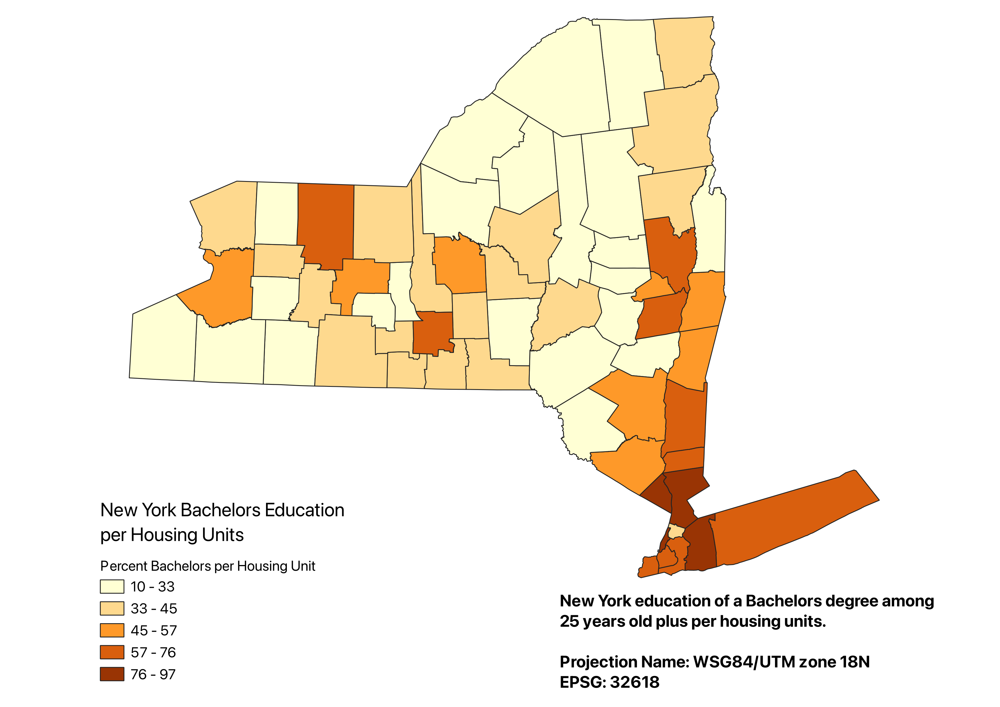
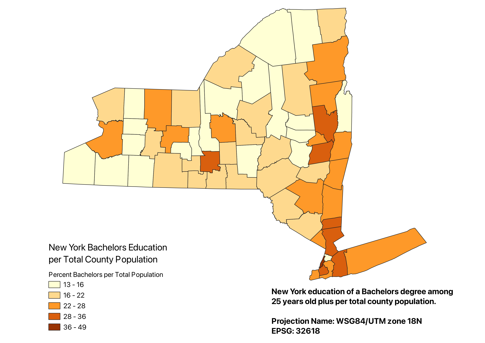
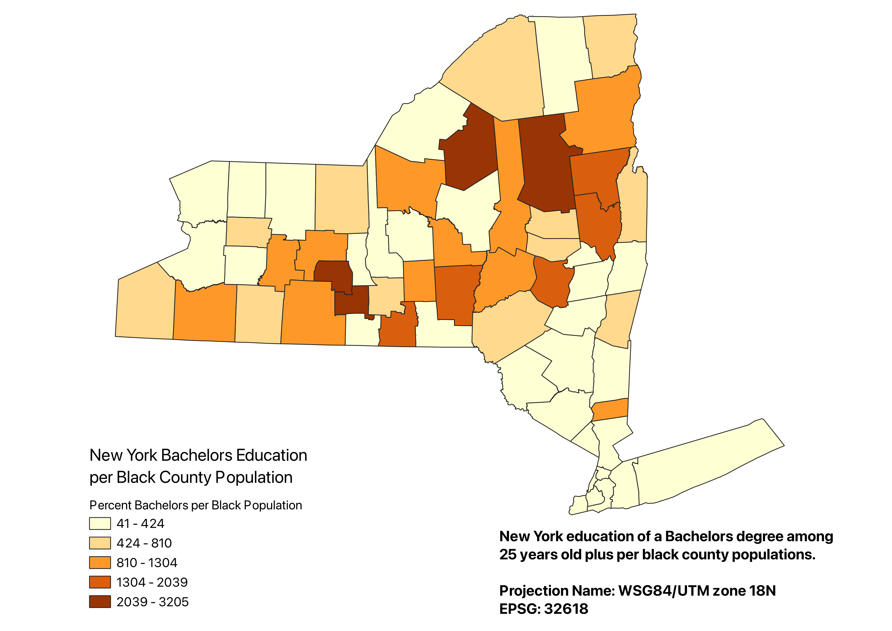

Homework 6: Census Data Ratios and Categories
Miles MacLean
Bachelors Education per Housing Units
This map shows a choropleth of the ratio of bachelors degrees obtained by people 25 years plus over the number of housing units there are in each county. Natural breaks were used to more noticably categorize the counties with a higher education levels.

Link to CSV
Bachelors Education per County Total Population
This map shows a choropleth of the ratio of bachelors degrees obtained by people 25 years plus over the total population in each county. Natural breaks were used to more noticably categorize the counties with a higher education levels.

Link to CSV
Bachelors Education per County Black Population
This map shows a choropleth of the ratio of bachelors degrees obtained by people 25 years plus over the total black population in each county. Natural breaks were used to more noticably categorize the counties with a higher education levels.

Link to CSV
Ratios were created using data from Homework 6a data.